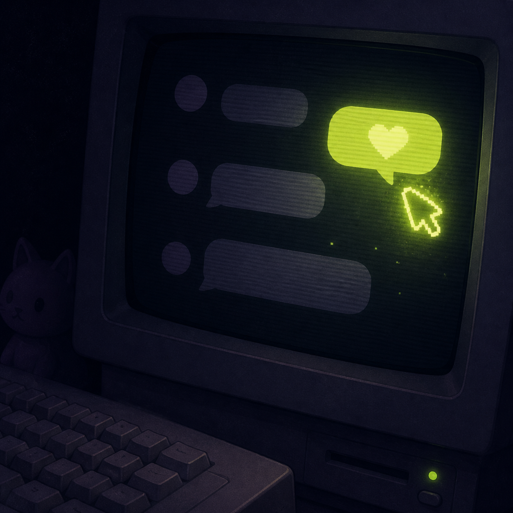

Browser
Official itch.io demo
Play the limited-feature HTML5 demo in your browser to sample the premise, chats, CGs, and scam-spotting loop.
Play the demoThe browser demo is a limited introduction. The Steam build is the current Early Access version with more features and ongoing updates.
Play the limited-feature HTML5 demo in your browser to sample the premise, chats, CGs, and scam-spotting loop.
Play the demoThe current desktop build is the version to use for saving, voice acting, route testing, achievements, and the latest content.
Open Steam pageFeatures, route content, and achievement behavior may change between updates. Record the build number before publishing a detailed guide.
